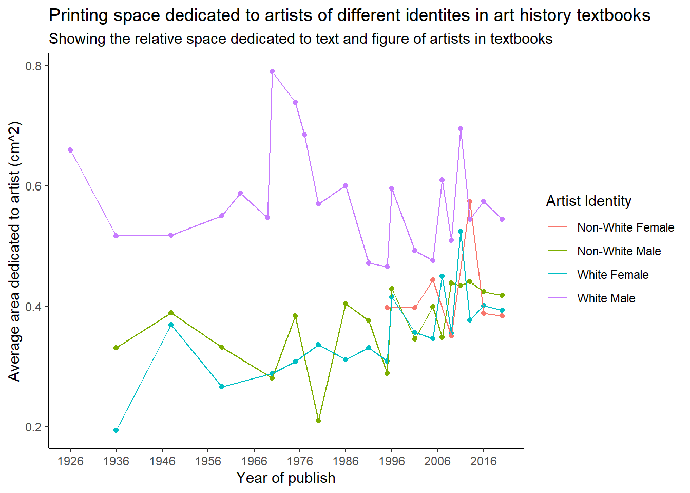

library(tidyverse)Plot For Review
Loading libraries
Loading Data
data <- read.csv("data/artists.csv")
glimpse(data)Rows: 3,162
Columns: 14
$ artist_name <chr> "Aaron Douglas", "Aaron Douglas", "Aaron Do…
$ edition_number <dbl> 9, 10, 11, 12, 13, 14, 15, 16, 14, 15, 16, …
$ year <int> 1991, 1996, 2001, 2005, 2009, 2013, 2016, 2…
$ artist_nationality <chr> "American", "American", "American", "Americ…
$ artist_nationality_other <chr> "American", "American", "American", "Americ…
$ artist_gender <chr> "Male", "Male", "Male", "Male", "Male", "Ma…
$ artist_race <chr> "Black or African American", "Black or Afri…
$ artist_ethnicity <chr> "Not Hispanic or Latino origin", "Not Hispa…
$ book <chr> "Gardner", "Gardner", "Gardner", "Gardner",…
$ space_ratio_per_page_total <dbl> 0.3533658, 0.3739470, 0.3032593, 0.3770489,…
$ artist_unique_id <int> 2, 2, 2, 2, 2, 2, 2, 2, 4, 4, 4, 6, 6, 6, 6…
$ moma_count_to_year <int> 0, 0, 0, 0, 0, 0, 0, 0, 0, 0, 0, 0, 0, 0, 0…
$ whitney_count_to_year <int> 0, 0, 0, 0, 0, 0, 0, 0, 0, 0, 0, 0, 0, 0, 0…
$ artist_race_nwi <chr> "Non-White", "Non-White", "Non-White", "Non…The ‘Artists’ dataset
From the ‘tidytuesday’ Github repo: The ‘Artists’ dataset contains various information about artists by edition of Gardner or Janson’s art history textbook from 1926 until 2020. Data includes demographic information, space occupied in the textbook, as well as presence in the MoMA and Whitney museums.
Cleaning
data_clean <- data %>%
select(year, artist_gender, artist_race_nwi, space_ratio_per_page_total) %>%
mutate(artist_identity = paste(artist_race_nwi, artist_gender)) %>%
filter(!grepl("N/A" ,artist_identity))
data_clean <- data_clean %>%
group_by(year, artist_identity) %>%
summarise(space_ratio = mean(space_ratio_per_page_total, na.rm = T),
.groups = "drop")Plotting
plot <- data_clean %>%
ggplot(aes(x = year, y = space_ratio, fill = artist_identity, col = artist_identity)) +
geom_point(show.legend = F) +
geom_line() +
scale_x_continuous(breaks = seq(min(data_clean$year), max(data_clean$year), by = 10)) +
xlab("Year of publish") +
ylab("Average area dedicated to artist (cm^2)") +
labs(title = "Printing space dedicated to artists of different identites in art history textbooks",
subtitle = "Showing the relative space dedicated to text and figure of artists in textbooks") +
guides(col = guide_legend(title = "Artist Identity")) +
theme_classic()
plot